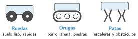

Robots terrestres, aéreos y submarinos
🤔 Pienso5 min
Qué hago aquí: Piensa un momento y contesta con lo que ya sabes. No pasa nada si no lo sabes: es para empezar.
¿Qué usarías para mover un robot por la playa de Somo: ruedas, orugas o patas? ¿Y para subir una escalera?
📖 Leo y aprendo20 min
Qué hago aquí: Lee despacio, mira los dibujos y los ejemplos, y quédate con la idea clave del final.
Los robots móviles pueden ir por tierra , por el aire o por el agua .
Los robots de tierra se mueven de tres formas:

Algunos robots los maneja una persona. Otros deciden solos.
✏️ Hago20 min
Qué hago aquí: Haz las actividades en orden. Empieza siempre por las básicas.
¿Tierra, aire o agua? a) Dron b) Robot aspirador c) Robot que revisa un barco
Mira el dibujo de las ruedas, las orugas y las patas. ¿Cuál elegirías para ir por barro?
¿Teleoperado o autónomo? a) Coche teledirigido b) Robot aspirador c) Robot siguelíneas
Escribe dos usos de un dron que sean útiles en Cantabria.
✏️ Puedes responder escribiendo, con un dibujo o un esquema, o contándolo en voz alta.
🚀 Amplío (si quieres saber más)
Qué hago aquí: ¿Has terminado? Lee la curiosidad o elige el reto. Es voluntario.
Diseña un robot para limpiar el fondo de la ría. ¿Cómo se mueve? ¿Es teleoperado o autónomo? ¿Por qué?
✅ Compruebo5 min
Qué hago aquí: Contesta sin mirar la ficha y marca cómo lo llevas.